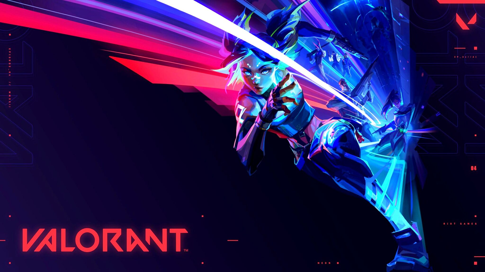
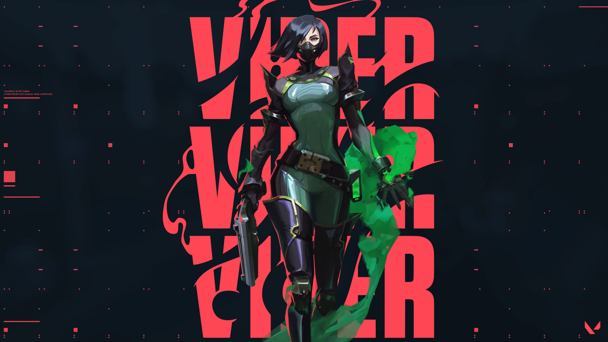
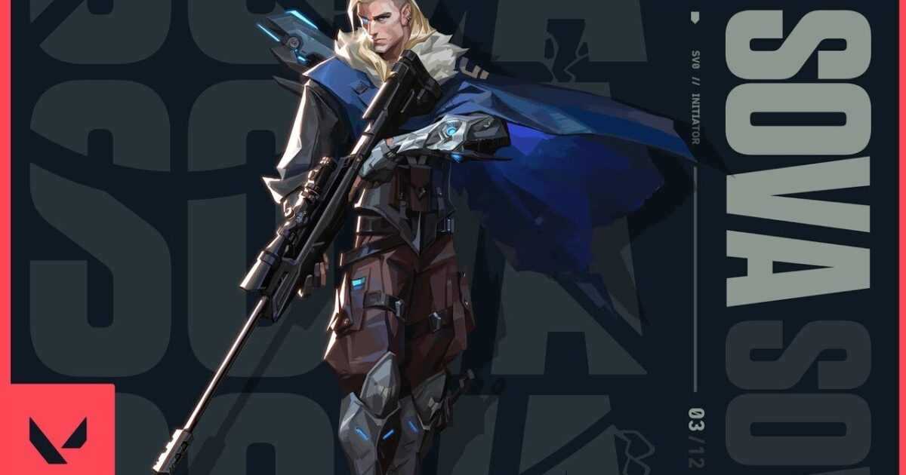

Viper | Sova | Jett | Astra | Sage|Raze | Neon | KillJoy | KAY/O | Skye | Omen | Cypher | Reyna | Chamber | Breach | Pheonix | Brimstone | Yoru | Fade

US chemist Viper takes control of the battlefield with devices emitting toxic gas and limits the view of opponents. And those whom she fails to poison, she will certainly outsmart.
Selects an acid capsule. Press the FIRE button to launch the pod, which shatters on impact, leaving behind a puddle of acid. Enemies hit by acid take damage and are slowed.
Selects a gas diffuser. Press the FIRE button to eject the atomizer, which stays in place until the end of the round. Cast the skill again to release a cloud of poisonous smoke from the atomizer, consuming fuel. Can be used more than once. The sprayer can be moved
Selects gas diffusers. Press the FIRE button to fire a long burst of atomizers. When used repeatedly, atomizers form a wall of poisonous smoke, consuming fuel. The skill can be used more than once.
Selects the chemical dispenser. Press the FIRE button to spray a cloud of chemicals around the Viper, reducing the sight range and maximum health of players in it.

Born from the eternal winter of Russia's tundra, Sova tracks, finds, and eliminates enemies with ruthless efficiency and precision. His custom bow and incredible scouting abilities ensure that even if you run, you cannot hide.
EQUIP an owl drone . FIRE to deploy and take control pf movement of the drone / while in control of the dron , FIRE to shoot a markibg dart . This dart will reveal the location of any player struck bby the dart
EQUIP a bow with shock bolt. FIRE to send the explosive bolt forward, detonating upon collision and damaging players nearby. HOLD FIRE to extend the range of the projectile. ALTERNATE FIRE to add up to two bounces to this arrow.
EQUIP a bow with recon bolt. FIRE to send the recon bolt forward, activating upon collision and revealing the location of nearby enemies caught in the line of sight of the bolt. Enemies can destroy this bolt. HOLD FIRE to extend the range of the projectile. ALTERNATE FIRE to add up to two bounces to this arrow.
EQUIP a bow with three long-range, wall-piercing energy blasts. FIRE to release an energy blast in a line in front of Sova, dealing damage and revealing the location of enemies caught in the line. This ability can be RE-USED up to two more times while the ability timer is active.